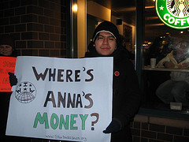
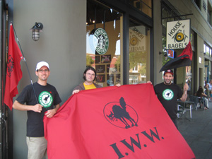

Submitted on Wed, 01/07/2009 - 5:41pm
 FOR IMMEDIATE RELEASE
FOR IMMEDIATE RELEASE
Starbucks Workers Union / Industrial Workers of the World
Contact: Erik Forman, 608 695 8705
January 7, 2008
Starbucks' Legal Troubles Deepen as Union Files Charges with National Labor Relations Board on nearly 30 Rights' Violations
Twin Cities Baristas to Illustrate Impact of Union-busting with Big "Performance Review" of Starbucks Management
Minneapolis -- On the heels of a landmark decision finding Starbucks guilty of almost 30 labor violations in New York City, the IWW Starbucks Workers Union has slapped the embattled coffee giant with new charges of nearly 30 additional counts of illegal union-busting in Minneapolis/St. Paul. The union alleges that Starbucks broke federal law repeatedly by interrogating workers about union sympathies, instructing supervisors to spy on the union, and disciplining workers for participating in the union. Union baristas plan to deliver a six-month "Performance Review" of Starbucks to regional management to illustrate their disgust.
Union barista Erik Forman said, "After the guilty verdict in New York City and settlements in the Twin Cities and Grand Rapids, we had hoped that Starbucks would have learned its lesson, but unfortunately, the company has chosen to continue the pattern of illegal union-busting they have established across the US. We will not stand for this, Starbucks must respect our right to organize."
In late December, a federal ruling against Starbucks concluded a two-year legal battle between Starbucks and baristas represented by the Industrial Workers of the World labor union in New York City, ordering the reinstatement of three baristas fired for union activity. The ruling parallels recent events in Grand Rapid, MI and the Twin Cities where Starbucks settled two similar Unfair Labor Practice charges.
Submitted on Wed, 01/07/2009 - 5:33pm
Disclaimer - The opinions of the author do not necessarily match those of the IWW. The image pictured to the right did not appear in the original article, we have added it here to provide a visual perspective. This article is reposted in accordance to Fair Use guidelines.
 By Melissa Allison - Seattle Times business reporter, Jan. 6, 2009
By Melissa Allison - Seattle Times business reporter, Jan. 6, 2009
Starbucks has reached a settlement in principle over a Michigan barista
whom the National Labor Relations Board said was fired in June because of his
union activities.
An administrative trial that was scheduled for today has been canceled, and
the agreement is expected to be signed this week, said Chet Byerly, resident
officer for the NLRB in Grand Rapids. He would not disclose details of the
proposed agreement.
A Starbucks spokeswoman confirmed that it is working on a
settlement.
It is the third time in a month that Starbucks has faced action from the
NLRB regarding the Industrial Workers of the World union.
Last month, an NLRB administrative law judge found that Starbucks took part
in unfair labor practices at several of its New York cafes.
Submitted on Wed, 01/07/2009 - 5:11pm
 Message Preview
Message Preview
From: Your Name <you@example.com>
To: hschultz@starbucks.com, info@starbucks.com, tdarrow@starbucks.com, twilk@starbucks.com, voneil@starbucks.com
Subject: E-Mail Action: Tell Starbucks We're Not Backing Down on Martin Luther King Day!
Your Personal Statement
Howard Schultz
Chairman and Chief Executive Officer
Starbucks Corporation
hschultz@starbucks.com
Dear Mr. Schultz,
I urge you in 2009 to stop treating Martin Luther King Day like a
second-class holiday. Last year after grassroots actions from the IWW
Starbucks Workers Union, your company was forced to admit publicly that
Starbucks does not pay the same time-and-a-half holiday premium on Dr.
King's federal holiday that it pays on five other holidays.
After you declined to honor Dr. King's day in 2008, the Starbucks
Workers Union refused to back down and pledged to fight on toward 2009
in the great tradition of the civil rights movement.
Many baristas, like many people around the world, are deeply inspired
by Dr. King's message and example. Yet while Starbucks claims to
embrace diversity and respect Dr. King, you continue to treat Martin
Luther King Day as inferior to other federal holidays.
I join the SWU's call for Starbucks to honor the Rev. Dr. Martin Luther
King, Jr. and the baristas who work on the federal holiday
commemorating his birthday by paying the time and a half holiday
premium you already pay on several other federal holidays. I expect
your prompt attention to this matter.
Your Name
Your Organization
123 Your St.
Yousville, YO 12345 United States
Phone: (123)456-7890
Fax: (123)456-7890x123
Submitted on Wed, 01/07/2009 - 4:50pm

By Stephanie Basile; Photo By Liberte Locke
The SWU staged a New Year's Eve protest as part of the ongoing campaign for Hurst. In addition to demanding pay for Hurst, the demonstrators talked to customers about the union's struggle for secure work hours and respect on the job. For one of the demonstrators, Starbucks barista Henry Marin, it was his first public action as a member of the union.
The group of about 10 union members spent an hour demonstrating on a cold New Year's Eve, chanting outside the Union Square East store and holding signs bearing slogans such as "support Your Local Union Baristas," and the soon-to-be ubiquitous slogan "Where's Anna's Money?" Customers were encouraged to ask management this question inside. One customer reported that the manager he spoke to pretended she had no idea what he was talking about.
Where's Anna's Money?
When a person is sick and has to leave work early, and if that person happens to be a part-time hourly wage earner, she or he misses out on the remaining hours in that shift. Having no paid sick time, this and other precarious situations are of the type that Starbucks baristas are used to dealing with.
And thus, when Anna Hurst left work sick during a shift this past August, she already knew she'd have to deal with losing a few hours' pay. Never do people imagine, though, that their employer will then deny them an additional two weeks of work. Unfortunately, that's exactly what Starbucks did. After having to leave sick, Hurst called work the next day to find out her schedule only to discover that her name had been removed from the schedule for two weeks.
Submitted on Wed, 01/07/2009 - 4:29pm
Disclaimer - The opinions of the author do not necessarily match those of the IWW. The image pictured to the right did not appear in the original article, we have added it here to provide a visual perspective. This article is reposted in accordance to Fair Use guidelines.

Starbucks is to begin proceedings Wednesday in a third case in which it
allegedly fired a barista because of his union activities.
By Melissa Allison, January 6, 2009 - Seattle Times business reporter
The union lumps keep coming for Starbucks, which was thumped by the
National Labor Relations Board (NLRB) last month for unfair labor practices at
several New York cafes.
Last week, the company settled a separate NLRB dispute in Michigan and on
Wednesday is to begin proceedings there in a third case in which it allegedly
fired a barista because of his union activities.
All three cases were initiated by baristas affiliated with the Industrial
Workers of the World (IWW), a century-old union that has worked for several
years to improve conditions for Starbucks workers.
In New York, an administrative-law judge with the NLRB said last month that
work rules were unfairly imposed on employees who supported the union. The
coffee chain was ordered to give back jobs to three former workers and
compensate them for lost earnings. The company also must post notices informing
employees of their labor-organizing rights.